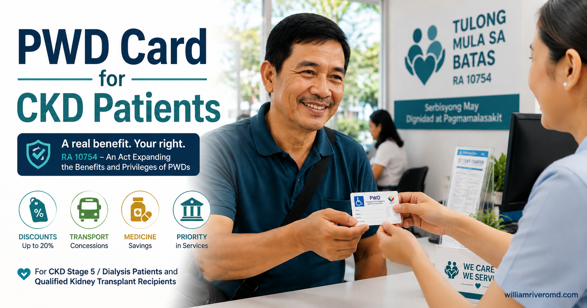
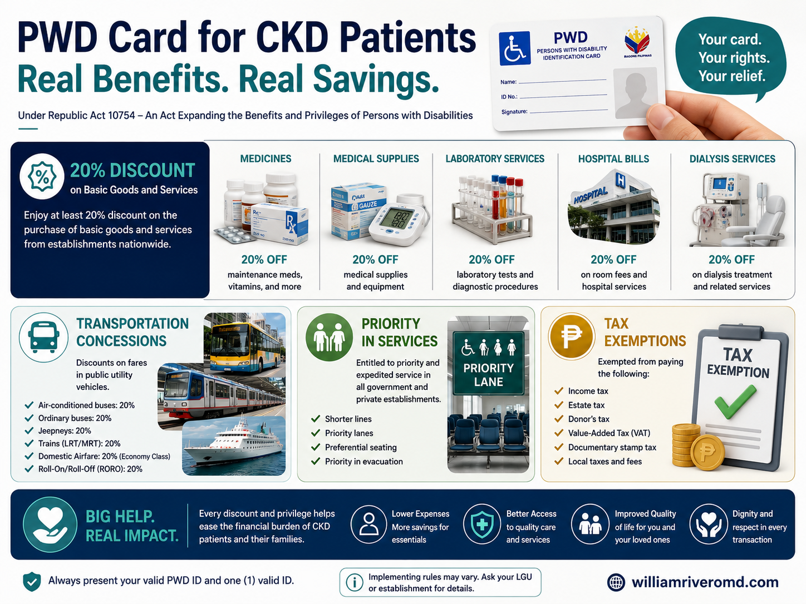
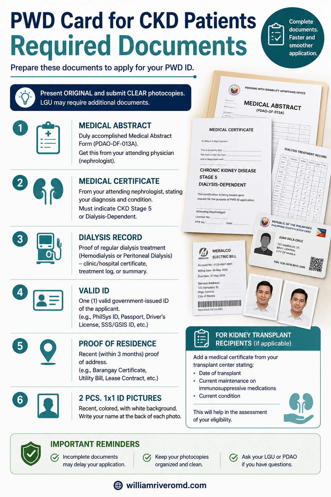
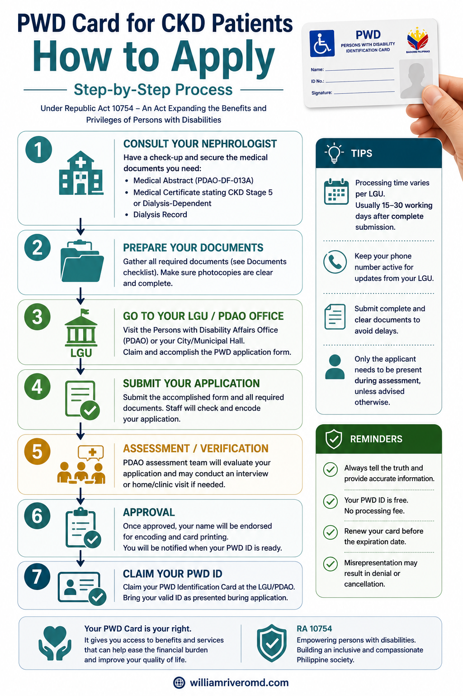
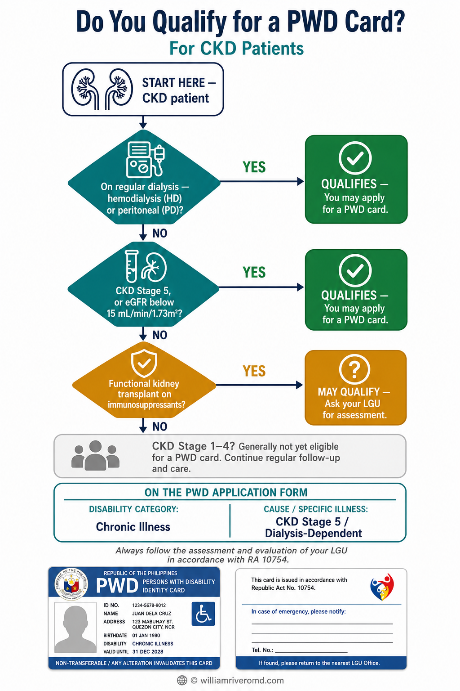

Who Qualifies for a PWD Card? Sino ang Kwalipikado para sa PWD Card? Kinsa ang Kwalipikado para sa PWD Card? Ninu ing Kwalipikado para king PWD Card?
CKD Stage 5 (eGFR <15) and dialysis patients may qualify as Persons with Disability under RA 7277 (Magna Carta for Disabled Persons, 1992) as amended by RA 10754 (2016). HB 05136 (19th Congress) proposes formal codification of CKD Stage 5 — currently pending, but existing law already supports qualification. Ang mga pasyenteng may CKD Stage 5 (eGFR <15) at dialysis ay maaaring maging kwalipikado bilang Taong may Kapansanan sa ilalim ng RA 7277 (Magna Carta para sa mga Taong may Kapansanan, 1992) na binago ng RA 10754 (2016). Ang HB 05136 (19th Congress) ay nagmumungkahi ng pormal na codification ng CKD Stage 5 — kasalukuyang nakabinbin, ngunit ang kasalukuyang batas ay sumusuporta na sa kwalipikasyon. Ang mga pasyente nga adunay CKD Stage 5 (eGFR <15) ug dialysis mahimong kwalipikado isip Tawo nga adunay Kapansanan sa ilalum sa RA 7277 (Magna Carta alang sa mga Tawo nga adunay Kapansanan, 1992) nga gibag-o sa RA 10754 (2016). Ang HB 05136 (19th Congress) nagsugyot sa pormal nga codification sa CKD Stage 5 — karon naa sa pending, apan ang kasamtangang balaod nagsuporta na sa pagkakwalipika. Deng pasyenteng may CKD Stage 5 (eGFR <15) at dialysis ay maaaring maging kwalipikado bilang Taong may Kapansanan sa ilalim ning RA 7277 (Magna Carta para king deng Taong may Kapansanan, 1992) na binalit ning RA 10754 (2016). Ing HB 05136 (19th Congress) ya nagmumungkahi ning pormal na codification ning CKD Stage 5 — kasalukuyang nakabinbin, ngunit ing kasalukuyang batas ya sumusuporta na king kwalipikasyon.
The Key: Your Doctor's Certification Ang Susi: Ang Sertipikasyon ng Inyong Doktor Ang Yawe: Ang Sertipikasyon sa Imong Doktor Ing Susi: Ing Sertipikasyon ning Inyong Doktor
There is no single national list of CKD stages that automatically qualify. The key is your doctor's certification that your kidney disease causes substantial limitation in daily activities. A nephrologist who documents this clearly makes the difference between approval and rejection. Walang iisang pambansang listahan ng mga CKD stage na awtomatikong kwalipikado. Ang susi ay ang sertipikasyon ng inyong doktor na ang inyong sakit sa bato ay nagdudulot ng malaking limitasyon sa mga pang-araw-araw na aktibidad. Ang isang nephrologist na malinaw na nagdodokumento nito ang nagtatakda ng pagkakaiba sa pagitan ng pag-apruba at pagtanggi. Walay usa ka nasudnong lista sa mga CKD stage nga awtomatikong kwalipikado. Ang yawe mao ang sertipikasyon sa imong doktor nga ang imong sakit sa kidney nagmugna og dako nga limitasyon sa mga adlaw-adlaw nga aktibidad. Ang usa ka nephrologist nga klaro nga nagdokumento niini ang nagpahinabog kalainan tali sa pag-aprubar ug pagsalikway. Alang metung a pambansang listahan ning deng CKD stage na awtomatikong kwalipikado. Ing susi ing sertipikasyon ning inyong doktor na ing inyong sakit sa batu ya nagdudulot ning malaking limitasyon sa deng pang-aldo-aldo na aktibidad. Ing metung a nephrologist na malinaw na nagdodokumento niti ing nagtatakda ning kaibhan sa pag-apruba at pagtanggi.
If Your LGU Has Previously Refused Kung Tinanggihan na Kayo ng Inyong LGU Dati Kung Gisalikway ka sa Imong LGU Kaniadto Nung Tinanggihan na Ka ning Inyong LGU Dati
Even if your LGU has previously told you that CKD does not qualify — bring this guide and your nephrologist's certification. RA 10754 does not exclude CKD. Many LGU rejections result from a clerk's misunderstanding, not the law. Kahit na sinabi na sa inyo ng inyong LGU na ang CKD ay hindi kwalipikado — dalhin ang gabay na ito at ang sertipikasyon ng inyong nephrologist. Ang RA 10754 ay hindi nagtatanggal ng CKD. Maraming pagtanggi ng LGU ay resulta ng maling pag-unawa ng isang clerk, hindi ng batas. Bisan pa gisultian ka sa imong LGU nga ang CKD dili kwalipikado — dad-a kining giya ug ang sertipikasyon sa imong nephrologist. Ang RA 10754 wala gisalikway ang CKD. Daghang mga pagsalikway sa LGU resulta sa sayop nga pagsabot sa usa ka clerk, dili ang balaod. Maski sabihin na sa kayu ning inyong LGU na ing CKD ali kwalipikado — dalhan ing gabay na ini at ing sertipikasyon ning inyong nephrologist. Ing RA 10754 ali nagtatanggal ning CKD. Dacal na pagtanggi ning LGU ya resulta ning maling pag-unawa ning metung a clerk, ali ing batas.
What Benefits Does a PWD Card Give You? Anong mga Benepisyo ang Ibinibigay ng PWD Card sa Inyo? Unsang mga Benepisyo ang Gihatag sa Imong PWD Card? Nanu Deng Benepisyo ing Ibinibigay ning PWD Card king Kayu?
Core benefits under RA 10754 apply to all qualified PWD cardholders, including CKD patients on dialysis. Ang mga pangunahing benepisyo sa ilalim ng RA 10754 ay naaangkop sa lahat ng kwalipikadong may hawak ng PWD card, kabilang ang mga pasyenteng may CKD na nasa dialysis. Ang mga panguna nga benepisyo sa ilalum sa RA 10754 nag-apply sa tanan nga kwalipikadong mga nagbitbit sa PWD card, lakip na ang mga pasyente nga adunay CKD nga nag-dialysis. Deng pangunahing benepisyo sa ilalim ning RA 10754 ya naaangkop king lahat ning kwalipikadong may hawak ning PWD card, kasama deng pasyenteng may CKD na nasa dialysis.

A summary of PWD card benefits for kidney patients under RA 10754, including a 20% discount and VAT exemption on dialysis sessions, medicines, supplies, lab tests, and hospital bills, plus priority lanes and transportation fare discounts.
| BenefitBenepisyoBenepisyoBenepisyo | What It CoversAno ang SinasaklawUnsa ang GisakopNanu ing Sinasaklaw |
|---|---|
| 20% Discount — DialysisDiskwento — DialysisDiskwento — DialysisDiskwento — Dialysis | All dialysis sessions (hemodialysis and peritoneal dialysis) — applied to your out-of-pocket portion after PhilHealthLahat ng sesyon ng dialysis (hemodialysis at peritoneal dialysis) — inilalapat sa inyong out-of-pocket na bahagi pagkatapos ng PhilHealthTanan nga mga sesyon sa dialysis (hemodialysis ug peritoneal dialysis) — gi-apply sa imong out-of-pocket nga bahin pagkahuman sa PhilHealthLahat ning deng sesyon ning dialysis (hemodialysis at peritoneal dialysis) — inilalapat sa inyong out-of-pocket na bahagi pagkatapos ning PhilHealth |
| 20% Discount — MedicinesDiskwento — GamotDiskwento — mga TambalDiskwento — Gamut | Prescription medicines: immunosuppressants, EPO, phosphate binders, antihypertensives, and all other prescribed drugsMga gamot na may reseta: immunosuppressants, EPO, phosphate binders, antihypertensives, at lahat ng iba pang inireseta na gamotMga tambal nga adunay reseta: immunosuppressants, EPO, phosphate binders, antihypertensives, ug tanan pang giresetang tambalDeng gamut na may reseta: immunosuppressants, EPO, phosphate binders, antihypertensives, at lahat ning iba pang inireseta na gamut |
| 20% Discount — Medical/Lab ServicesDiskwento — Medikal/Lab na SerbisyoDiskwento — Medikal/Lab nga SerbisyoDiskwento — Medikal/Lab Serbisyo | Creatinine, eGFR, CBC, PTH, dialysis-related labs, and other outpatient medical servicesCreatinine, eGFR, CBC, PTH, mga lab na may kaugnayan sa dialysis, at iba pang mga serbisyong medikal na outpatientCreatinine, eGFR, CBC, PTH, mga lab nga may kalabtan sa dialysis, ug uban pang mga serbisyo sa medikal nga outpatientCreatinine, eGFR, CBC, PTH, deng lab na may kaugnayan sa dialysis, at iba pang deng serbisyong medikal na outpatient |
| 20% Discount — Medical EquipmentDiskwento — Medikal na KagamitanDiskwento — Medikal nga KagamitanDiskwento — Medikal Kagamitan | BP monitors, weighing scales, dialysis consumables, and other prescribed medical equipmentMga BP monitor, weighing scale, dialysis consumables, at iba pang inireseta na medikal na kagamitanMga BP monitor, timbangan, dialysis consumables, ug uban pang giresetang medikal nga kagamitanDeng BP monitor, weighing scale, dialysis consumables, at iba pang inireseta na medikal na kagamitan |
| VAT ExemptionExemption sa VATExemption sa VATExemption sa VAT | No 12% VAT on medicines and medical goods purchased with PWD card and valid prescriptionWalang 12% VAT sa mga gamot at medikal na kalakal na binili gamit ang PWD card at wastong resetaWalay 12% VAT sa mga tambal ug medikal nga kalakal nga gipalit gamit ang PWD card ug balido nga resetaAlang 12% VAT sa deng gamut at medikal na kalakal na binili gamit ing PWD card at wastong reseta |
| Priority LanePriority LanePriority LanePriority Lane | At government offices, hospitals, dialysis centers, pharmacies, and other establishmentsSa mga opisina ng pamahalaan, ospital, dialysis center, parmasya, at iba pang establisyimentoSa mga opisina sa gobyerno, ospital, dialysis center, parmasya, ug uban pang establisimentoSa deng opisina ning gobyerno, ospital, dialysis center, parmasya, at iba pang establisyimento |
How Much Can You Save? Magkano ang Maitipid Ninyo? Pila ang Matipid Ninyo? Magkanu ing Maitipid Ninyu?
At ₱3,000 out-of-pocket per session after PhilHealth, a 20% PWD discount saves ₱600 per session — or ₱93,600 per year on 3×/week dialysis. That is more than one month of dialysis sessions saved. Sa ₱3,000 out-of-pocket bawat sesyon pagkatapos ng PhilHealth, ang 20% na diskwento ng PWD ay makatipid ng ₱600 bawat sesyon — o ₱93,600 bawat taon sa 3×/linggong dialysis. Iyon ay higit sa isang buwan ng mga sesyon ng dialysis na natipid. Sa ₱3,000 nga out-of-pocket matag sesyon pagkahuman sa PhilHealth, ang 20% nga diskwento sa PWD nakatipid og ₱600 matag sesyon — o ₱93,600 matag tuig sa 3×/semana nga dialysis. Kana labaw pa sa usa ka bulan nga mga sesyon sa dialysis ang natipid. King ₱3,000 out-of-pocket bawat sesyon pagkatapos ning PhilHealth, ing 20% diskwento ning PWD ya makatipid ning ₱600 bawat sesyon — o ₱93,600 bawat banua king 3×/lutu na dialysis. Iyan ya mahigit isang bulan na deng sesyon ning dialysis na natipid.
Important: The Discount Applies After PhilHealth Mahalaga: Ang Diskwento ay Inilalapat Pagkatapos ng PhilHealth Importante: Ang Diskwento Gi-apply Pagkahuman sa PhilHealth Mahalaga: Ing Diskwento ya Inilalapat Pagkatapos ning PhilHealth
The 20% discount applies to the remaining balance after PhilHealth — it does NOT stack as 20% on the full session price. Calculate from your actual out-of-pocket, not from the gross fee. Ang 20% na diskwento ay inilalapat sa natitirang balanse pagkatapos ng PhilHealth — HINDI ito nagdaragdag bilang 20% sa buong presyo ng sesyon. Kalkulahin mula sa inyong aktwal na out-of-pocket, hindi mula sa gross na bayad. Ang 20% nga diskwento gi-apply sa nahabilin nga balanse pagkahuman sa PhilHealth — DILI kini nagdugang isip 20% sa tibuok presyo sa sesyon. Kuwentaha gikan sa imong aktwal nga out-of-pocket, dili gikan sa gross nga bayad. Ing 20% diskwento ya inilalapat sa natitirang balanse pagkatapos ning PhilHealth — ALI iti nagdaragdag bilang 20% sa buong presyo ning sesyon. Kalkulahin mula sa inyong aktwal na out-of-pocket, ali mula sa gross na bayad.
Senior Citizens: Use PWD or Senior Citizen Discount — Whichever Is Higher Mga Senior Citizen: Gumamit ng PWD o Senior Citizen na Diskwento — Alin ang Mas Mataas Mga Senior Citizen: Gamiton ang PWD o Senior Citizen nga Diskwento — Bisan Asa ang Mas Taas Deng Senior Citizen: Gamitin ing PWD o Senior Citizen Diskwento — Ninu ing Mas Mataas
Senior Citizens (60+) with CKD can use BOTH the Senior Citizen discount and PWD discount — apply whichever is higher for each transaction. They cannot be combined on a single transaction. Ang mga Senior Citizen (60+) na may CKD ay maaaring gumamit ng PAREHONG diskwento ng Senior Citizen at PWD — ilapat ang mas mataas para sa bawat transaksyon. Hindi maaaring pagsamahin ang mga ito sa isang transaksyon. Ang mga Senior Citizen (60+) nga adunay CKD makagamit sa PAREHO nga diskwento sa Senior Citizen ug PWD — i-apply ang mas taas alang sa matag transaksyon. Dili kini mahimong pagsamahon sa usa ka transaksyon. Deng Senior Citizen (60+) na may CKD ay maaaring gumamit ning PAREHONG diskwento ning Senior Citizen at PWD — ilapat ing mas mataas para king bawat transaksyon. Ali maaaring pagsamahin deti sa metung a transaksyon.
Documents to Prepare Mga Dokumentong Ihahanda Mga Dokumentong Ihanda Deng Dokumentong Ihanda
Gather all documents before going to your LGU office. The medical certificate from your nephrologist is the most important — and often the longest to prepare. Ihanda ang lahat ng dokumento bago pumunta sa opisina ng inyong LGU. Ang medikal na sertipiko mula sa inyong nephrologist ang pinakamahalaga — at madalas na pinakamatagal na ihanda. Tigoma ang tanan nga mga dokumento sa wala pa moadto sa opisina sa imong LGU. Ang medikal nga sertipiko gikan sa imong nephrologist ang labing importante — ug sagad ang labing dugay nga maandam. Tipunin deng lahat na dokumento bago pumunta sa opisina ning inyong LGU. Ing medikal na sertipiko mula sa inyong nephrologist ing pinaka-importante — at madalas na pinakamatagal na ihanda.

A checklist of documents needed to apply for a PWD card: the completed registration form, a medical certificate from your nephrologist confirming CKD Stage 5 or dialysis dependence, your dialysis record, a valid government ID, proof of residence, and two 1x1 ID photos.
Required Documents Mga Kinakailangang Dokumento Mga Gikinahanglan nga Dokumento Deng Kinakailangang Dokumento
- Accomplished PWD Registration Form — available at City/Municipal Social Welfare and Development Office (C/MSWDO) or LGU health office (free of charge) Napunang PWD Registration Form — makukuha sa City/Municipal Social Welfare and Development Office (C/MSWDO) o LGU health office (libre) Napuno nga PWD Registration Form — makuha sa City/Municipal Social Welfare and Development Office (C/MSWDO) o LGU health office (libre) Napunang PWD Registration Form — makukuha sa City/Municipal Social Welfare and Development Office (C/MSWDO) o LGU health office (libre)
- Medical Certificate from a Licensed Nephrologist — must state: diagnosis (CKD Stage 5 or ESRD; dialysis-dependent), that condition causes "substantial limitation in one or more major life activities," physician's PRC license number + clinic address + contact, date within 6 months of application Medikal na Sertipiko mula sa Lisensyadong Nephrologist — dapat sabihin: diagnosis (CKD Stage 5 o ESRD; dialysis-dependent), na ang kondisyon ay nagdudulot ng "substantial limitation sa isa o higit pang pangunahing aktibidad sa buhay," PRC license number ng doktor + address ng klinika + kontak, petsa sa loob ng 6 na buwan ng aplikasyon Medikal nga Sertipiko gikan sa Lisensyadong Nephrologist — kinahanglan isulti: diagnosis (CKD Stage 5 o ESRD; dialysis-dependent), nga ang kondisyon nagmugna og "substantial limitation sa usa o labaw pa nga mayor nga aktibidad sa kinabuhi," PRC license number sa doktor + adres sa klinika + kontak, petsa sulod sa 6 ka bulan sa aplikasyon Medikal na Sertipiko mula sa Lisensyadong Nephrologist — dapat sabihin: diagnosis (CKD Stage 5 o ESRD; dialysis-dependent), na ing kondisyon ya nagdudulot ning "substantial limitation sa metung o higit pang pangunahing aktibidad sa biye," PRC license number ning doktor + adres ning klinika + kontak, petsa sa loob ning 6 bulan ning aplikasyon
- 1 recent 1×1 ID photo (white background) 1 kamakailang 1×1 na ID photo (puting background) 1 bag-o nga 1×1 nga ID photo (puting background) 1 bagong 1×1 na ID photo (puting background)
- PSA Birth Certificate (original or certified true copy) PSA Birth Certificate (orihinal o certified true copy) PSA Birth Certificate (orihinal o certified true copy) PSA Birth Certificate (orihinal o certified true copy)
- Any government-issued photo ID (PhilHealth card, UMID, Voter's ID, passport, driver's license) Anumang photo ID na inisyu ng gobyerno (PhilHealth card, UMID, Voter's ID, passport, driver's license) Bisan unsang photo ID nga gipagawas sa gobyerno (PhilHealth card, UMID, Voter's ID, passport, driver's license) Anumang photo ID na inisyu ning gobyerno (PhilHealth card, UMID, Voter's ID, passport, driver's license)
- Proof of residence (barangay certification or utility bill in your name) Patunay ng tirahan (barangay certification o utility bill sa inyong pangalan) Patunay sa puloy-anan (barangay certification o utility bill sa imong ngalan) Patunay ning tirahan (barangay certification o utility bill sa inyong ngalan)
Optional but Helpful Opsyonal ngunit Kapaki-pakinabang Opsyonal apan Makatabang Opsyonal ngunit Makapakibig
Dialysis logbook or prescription showing ongoing treatment; most recent eGFR/creatinine lab result; PhilHealth Z-benefit enrollment confirmation; referral letter from dialysis center confirming active enrollment. Dialysis logbook o reseta na nagpapakita ng patuloy na paggamot; pinakabagong eGFR/creatinine na resulta ng lab; kumpirmasyon ng enrollment sa PhilHealth Z-benefit; liham ng referral mula sa dialysis center na nagkukumpirma ng aktibong enrollment. Dialysis logbook o reseta nga nagpakita sa nagpadayon nga pagtambal; pinaka-bag-o nga eGFR/creatinine nga resulta sa lab; kumpirmasyon sa enrollment sa PhilHealth Z-benefit; sulat sa referral gikan sa dialysis center nga nagkumpirma sa aktibong enrollment. Dialysis logbook o reseta na nagpapakita ning patuluy na paggamut; pinakabagong eGFR/creatinine na resulta ning lab; kumpirmasyon ning enrollment sa PhilHealth Z-benefit; liham ning referral mula sa dialysis center na nagkukumpirma ning aktibong enrollment.
Bring Originals AND Photocopies Magdala ng mga Orihinal AT Fotokopya Dad-a ang mga Orihinal UG Fotokopya Magdala ning Deng Orihinal AT Photocopy
Bring one photocopy of each document. The LGU will photocopy originals and return them — but having your own copies ready speeds up the process. Magdala ng isang fotokopya ng bawat dokumento. Magkukopya ang LGU ng mga orihinal at ibabalik ang mga ito — ngunit ang pagkakaroon ng sarili ninyong mga kopya ay nagpapadali ng proseso. Magdala og usa ka fotokopya sa matag dokumento. Ang LGU magkopya sa mga orihinal ug ibalik kini — apan ang pagbaton sa imong kaugalingon nga mga kopya nagpadali sa proseso. Magdala ning metung a photocopy ning bawat dokumento. Ing LGU ya magkukopya ning deng orihinal at ibabalik deti — ngunit ing pagkakaroon ning inyong sariling deng kopya ya nagpapadali ning proseso.
What to Ask Your Nephrologist Ano ang Itatanong sa Inyong Nephrologist Unsa ang Pangutan-on sa Imong Nephrologist Nanu ing Itatanong sa Inyong Nephrologist
Ask your nephrologist specifically: "Please include in my medical certificate that my kidney disease substantially limits my daily activities." This exact phrase aligns with RA 10754 language and reduces rejection risk. Tanungin ang inyong nephrologist nang tiyak: "Pakisama sa aking medikal na sertipiko na ang aking sakit sa bato ay malaking limitasyon sa aking pang-araw-araw na aktibidad." Ang eksaktong pariralang ito ay naaayon sa wika ng RA 10754 at binabawasan ang panganib ng pagtanggi. Pangutana ang imong nephrologist sa espesipiko: "Palihug isama sa akong medikal nga sertipiko nga ang akong sakit sa kidney dako kaayo og limitasyon sa akong adlaw-adlaw nga mga aktibidad." Kining eksaktong parirala nag-align sa pinulongan sa RA 10754 ug nagpakunhod sa risgo sa pagsalikway. Tanungin ing inyong nephrologist nang tiyak: "Pakisama sa medicertificate ko na ing sakit ko sa batu ya malaking limitasyon sa pang-aldo-aldo kong aktibidad." Ing eksaktong pariralang ini ya naaayon sa wika ning RA 10754 at binabawasan ing panganib ning pagtanggi.
Common Reasons for Rejection Mga Karaniwang Dahilan ng Pagtanggi Mga Kasagaran nga Hinungdan sa Pagsalikway Deng Karaniwang Dahilan ning Pagtanggi
- Medical certificate does not mention "functional limitation" or "disability"Ang medikal na sertipiko ay hindi nabanggit ang "functional limitation" o "disability"Ang medikal nga sertipiko wala naghisgot sa "functional limitation" o "disability"Ing medikal na sertipiko ali nabanggit ing "functional limitation" o "disability"
- Medical certificate from a general practitioner only (not a nephrologist)Medikal na sertipiko mula sa isang general practitioner lamang (hindi isang nephrologist)Medikal nga sertipiko gikan lamang sa usa ka general practitioner (dili usa ka nephrologist)Medikal na sertipiko mula king metung a general practitioner lamang (ali metung a nephrologist)
- Photo does not meet specifications (e.g., colored or patterned background)Ang larawan ay hindi nakakatugon sa mga detalye (hal., may kulay o may disenyo ang background)Ang litrato wala nakab-ot sa mga detalye (pananglitan, adunay kolor o disenyo ang background)Ing litrato ali nakakatugon sa deng detalye (hal., may kulay o may disenyo ing background)
- Birth certificate not PSA-certifiedAng birth certificate ay hindi sertipikado ng PSAAng birth certificate wala sertipikado sa PSAIng birth certificate ali sertipikado ning PSA
Where and How to Apply: Step by Step Saan at Paano Mag-apply: Hakbang sa Hakbang Asa ug Unsaon Pag-apply: Lakang sa Lakang Nung Nung at Paano Mag-apply: Hakbang sa Hakbang

A step-by-step path for applying for a PWD card: get a medical certificate from your nephrologist, prepare your documents, go to your LGU or PDAO office, submit the application, go through assessment and verification, wait for approval and ID printing, and then claim your PWD ID.
Gather all documents (§3 checklist above) Tipunin ang lahat ng dokumento (checklist sa §3 sa itaas) Tigoma ang tanan nga mga dokumento (checklist sa §3 sa ibabaw) Tipunin lahat ning deng dokumento (checklist sa §3 sa itaas)
Get your medical certificate first — it is the longest step if your nephrologist needs time to prepare it. Call ahead to request the certificate at your next clinic visit. Kumuha muna ng inyong medikal na sertipiko — ito ang pinakamahabang hakbang kung kailangan ng inyong nephrologist ng oras para ihanda ito. Tumawag nang maaga para humiling ng sertipiko sa inyong susunod na pagbisita sa klinika. Kuha una ang imong medikal nga sertipiko — kini ang labing dugay nga lakang kung ang imong nephrologist nagkinahanglan og oras aron maandam kini. Tawag una aron mangayo sa sertipiko sa imong sunod nga pagbisita sa klinika. Kumuha nuna ning inyong medikal na sertipiko — iti ing pinakamahabang hakbang nung kailangan ning inyong nephrologist ning oras para ihanda. Tumawag nang maaga para humiling ning sertipiko sa inyong susunod na pagbisita sa klinika.
Go to your City/Municipal Social Welfare and Development Office (C/MSWDO) Pumunta sa City/Municipal Social Welfare and Development Office (C/MSWDO) Adto sa City/Municipal Social Welfare and Development Office (C/MSWDO) Pumunta sa City/Municipal Social Welfare and Development Office (C/MSWDO)
In some cities (Manila, Quezon City, Davao), the Health Office processes PWD registration instead. Call your barangay hall first to confirm which office handles PWD in your LGU. Bring originals AND one photocopy of each document. Sa ilang lungsod (Manila, Quezon City, Davao), ang Health Office ang nagpoproseso ng PWD registration. Tumawag muna sa inyong barangay hall para kumpirmahin kung aling opisina ang humahawak ng PWD sa inyong LGU. Magdala ng mga orihinal AT isang fotokopya ng bawat dokumento. Sa pipila ka syudad (Manila, Quezon City, Davao), ang Health Office ang nagproseso sa PWD registration. Tawagi una ang imong barangay hall aron kumpirmahin kung unsang opisina ang nagdumala sa PWD sa imong LGU. Magdala og mga orihinal UG usa ka fotokopya sa matag dokumento. Sa deng lunsod (Manila, Quezon City, Davao), ing Health Office ing nagpoproseso ning PWD registration. Tumawag nuna sa inyong barangay hall para kumpirmahin kung nanu a opisina ing humahawak ning PWD sa inyong LGU. Magdala ning deng orihinal AT metung a photocopy ning bawat dokumento.
Fill out the PWD Registration Form Punan ang PWD Registration Form Pun-a ang PWD Registration Form Punuan ing PWD Registration Form
Form is provided at the office — free of charge. Do NOT pay anyone who charges a form fee. Disability category: Chronic Illness. Disability cause: Chronic Kidney Disease, Stage 5 / Dialysis-Dependent. Ang form ay ibinibigay sa opisina — libre. HUWAG magbayad sa sinumang naniningil ng bayad para sa form. Kategorya ng kapansanan: Chronic Illness. Sanhi ng kapansanan: Chronic Kidney Disease, Stage 5 / Dialysis-Dependent. Ang form gihatag sa opisina — libre. AYAW bayri ang bisan kinsa nga nagsining ug bayad alang sa form. Kategorya sa kapansanan: Chronic Illness. Hinungdan sa kapansanan: Chronic Kidney Disease, Stage 5 / Dialysis-Dependent. Ing form ya ibinibigay sa opisina — libre. ALYUNG bayaran ing sinuman na naningil ning bayad para king form. Kategorya ning kapansanan: Chronic Illness. Sanhi ning kapansanan: Chronic Kidney Disease, Stage 5 / Dialysis-Dependent.
Submit documents; photo is taken at the office (usually) Isumite ang mga dokumento; kinukuha ang larawan sa opisina (kadalasan) Isumite ang mga dokumento; ang litrato gikuha sa opisina (kasagaran) Isumite deng dokumento; kinukuha ing litrato sa opisina (kadalasan)
Some LGUs take a new photo on-site; others use the submitted 1×1 photo. Keep all original documents — they should be returned after photocopying. Ang ilang LGU ay kumukuha ng bagong larawan sa lugar; ang iba ay gumagamit ng isinumiteng 1×1 na larawan. Itago ang lahat ng orihinal na dokumento — dapat ibalik ang mga ito pagkatapos ng pagkokopya. Ang ubang LGU nagkuha og bag-ong litrato sa lugar; ang uban naggamit sa gisumiteng 1×1 nga litrato. Bantayi ang tanan nga orihinal nga mga dokumento — kinahanglan ibalik kini pagkahuman sa pagkopya. Deng LGU ay kumukuha ning bagong litrato sa lugar; deng iba ay gumagamit ning isumiteng 1×1 na litrato. Itago lahat ning orihinal na dokumento — dapat ibalik deti pagkatapos ning pagkokopya.
Receive your PWD ID Tanggapin ang inyong PWD ID Dawata ang imong PWD ID Tanggapin ing inyong PWD ID
Processing time: same day in some LGUs; 1–4 weeks in others. Ask for a receiving slip/acknowledgment receipt while waiting. The ID is free of charge. Oras ng pagpoproseso: parehong araw sa ilang LGU; 1–4 na linggo sa iba. Humingi ng receiving slip/acknowledgment receipt habang naghihintay. Ang ID ay libre. Oras sa pagproseso: sama-sama nga adlaw sa ubang LGU; 1–4 ka semana sa uban. Pangayo ug receiving slip/acknowledgment receipt samtang nagahulat. Ang ID libre. Oras ning pagpoproseso: parehong aldo sa deng LGU; 1–4 lutu sa iba. Humingi ning receiving slip/acknowledgment receipt habang naghihintay. Ing ID ya libre.
Register with the NCDA National Registry (optional but recommended) Magrehistro sa NCDA National Registry (opsyonal ngunit inirerekomenda) Magrehistro sa NCDA National Registry (opsyonal apan girekomenda) Magrehistro sa NCDA National Registry (opsyonal ngunit inirekomenda)
Go to ncda.gov.ph or ask your LGU officer — national registry gives your PWD ID broader recognition if you travel or use the discount in other cities. Pumunta sa ncda.gov.ph o tanungin ang inyong LGU officer — ang national registry ay nagbibigay sa inyong PWD ID ng mas malawak na pagkilala kung maglalakbay kayo o gagamitin ang diskwento sa ibang lungsod. Adto sa ncda.gov.ph o pangutan-a ang imong LGU officer — ang national registry naghatag sa imong PWD ID og mas halapad nga pagila kung magbiyahe ka o gamiton ang diskwento sa ubang syudad. Pumunta sa ncda.gov.ph o tanungin ing inyong LGU officer — ing national registry ya nagbibigay king inyong PWD ID ning mas malawak na pagkilala nung maglalakbay kayu o gagamitin ing diskwento sa ibang lunsod.
Register Where You Live, Not Where You Dialyze Magrehistro Saan Kayo Nakatira, Hindi Saan Kayo Nag-dialysis Magrehistro Diin Ikaw Nagpuyo, Dili Diin Ikaw Nag-dialysis Magrehistro Nung Nung Ka Nakatira, Ali Nung Nung Ka Nagda-dialysis
PWD registration is done at your LGU where you are registered — not necessarily where your dialysis center is located. Bring your barangay certificate of residency. Ang PWD registration ay ginagawa sa inyong LGU kung saan kayo nakarehistrong — hindi kinakailangang kung saan matatagpuan ang inyong dialysis center. Magdala ng inyong barangay certificate of residency. Ang PWD registration gihimo sa imong LGU diin ikaw nakarehistrong — dili kinahanglan diin nahimutang ang imong dialysis center. Magdala sa imong barangay certificate of residency. Ing PWD registration ya ginagawa sa inyong LGU nung nung kayo nakarehistrong — ali kinakailangan nung nung matatagpuan ing inyong dialysis center. Magdala ning inyong barangay certificate of residency.
Using Your PWD Card Paggamit ng Inyong PWD Card Paggamit sa Imong PWD Card Paggamit ning Inyong PWD Card
Always present your PWD ID before a service is rendered — not after. The discount cannot be applied retroactively in most establishments. Laging ipakita ang inyong PWD ID bago maibigay ang serbisyo — hindi pagkatapos. Ang diskwento ay hindi na maaaring ilapat nang retroaktibo sa karamihan ng mga establisyimento. Kanunay ipresentar ang imong PWD ID sa wala pa mahatagi ang serbisyo — dili pagkahuman. Ang diskwento dili na mahimong i-apply nga retroaktibo sa kadaghanan sa mga establisimento. Pirming ipakita ing inyong PWD ID bago maibigay ing serbisyo — ali pagkatapos. Ing diskwento ali na maaaring ilapat nang retroaktibo sa karamihan ning deng establisyimento.

A recap of who qualifies, shown with a sample PWD ID card: patients on dialysis or at CKD Stage 5 are eligible, and you should present the card before each service to receive the 20% discount.
At a Dialysis Center Sa Dialysis Center Sa Dialysis Center Sa Dialysis Center
Present PWD ID at registration before each session. 20% discount applies to the portion YOU pay (after PhilHealth deduction). Ask billing staff to show computation — you have the right to see how the discount was applied. If refused: ask for name and position of person refusing; cite RA 10754; escalate to center administrator. Ipakita ang PWD ID sa registration bago ang bawat sesyon. Ang 20% na diskwento ay inilalapat sa bahaging BINABAYARAN NINYO (pagkatapos ng bawas ng PhilHealth). Hilingin sa billing staff na ipakita ang computation — mayroon kayong karapatang makita kung paano inilapat ang diskwento. Kung tinanggihan: hilingin ang pangalan at posisyon ng tumatangging tao; isangguni ang RA 10754; i-escalate sa administrator ng center. Ipresentar ang PWD ID sa registration sa wala pa ang matag sesyon. Ang 20% nga diskwento gi-apply sa bahin nga GIBAYARAN NINYO (pagkahuman sa bawas sa PhilHealth). Pangayo sa billing staff nga ipakita ang computation — aduna kayong katungod sa pagtan-aw kung unsaon pag-apply sa diskwento. Kung gisalikway: pangayo sa ngalan ug posisyon sa nagsalikway; isangguni ang RA 10754; i-escalate sa administrator sa center. Ipakita ing PWD ID sa registration bago bawat sesyon. Ing 20% diskwento ya inilalapat sa bahaging BINABAYARAN NINYU (pagkatapos ning bawas ning PhilHealth). Hilingin sa billing staff na ipakita ing computation — mayroon kayung karapatang makita kung paano inilapat ing diskwento. Nung tinanggihan: hilingin ing ngalan at posisyon ning tumatangging tao; isangguni ing RA 10754; i-escalate sa administrator ning center.
At a Pharmacy Sa Parmasya Sa Parmasya Sa Parmasya
Present PWD ID + prescription. Discount applies to brand-name AND generic medicines. VAT exemption applies simultaneously — you should not pay 12% VAT on medicines. Keep your Official Receipt. Ipakita ang PWD ID + reseta. Ang diskwento ay naaangkop sa brand-name AT generic na gamot. Sabay-sabay na naaangkop ang VAT exemption — hindi kayo dapat magbayad ng 12% VAT sa mga gamot. Itago ang inyong Official Receipt. Ipresentar ang PWD ID + reseta. Ang diskwento nag-apply sa brand-name UG generic nga mga tambal. Ang VAT exemption nag-apply sa samang higayon — dili kamo kinahanglan magbayad og 12% VAT sa mga tambal. Tipiga ang imong Official Receipt. Ipakita ing PWD ID + reseta. Ing diskwento ya naaangkop sa brand-name AT generic na gamut. Sabay-sabay na naaangkop ing VAT exemption — ali kayu dapat magbayad ning 12% VAT sa deng gamut. Itago ing inyong Official Receipt.
At a Laboratory Sa Laboratoryo Sa Laboratoryo Sa Laboratoryo
Present PWD ID before the lab request is processed (not after). 20% applies to most diagnostic laboratory services ordered by your nephrologist. Ipakita ang PWD ID bago maproseso ang kahilingan sa lab (hindi pagkatapos). Ang 20% ay naaangkop sa karamihan ng mga diagnostic na serbisyo ng laboratoryo na iniutos ng inyong nephrologist. Ipresentar ang PWD ID sa wala pa maproseso ang hangyo sa lab (dili pagkahuman). Ang 20% nag-apply sa kadaghanan sa mga diagnostic nga serbisyo sa laboratoryo nga gisugo sa imong nephrologist. Ipakita ing PWD ID bago maproseso ing kahilingan sa lab (ali pagkatapos). Ing 20% ya naaangkop sa karamihan ning deng diagnostic na serbisyo ning laboratoryo na iniutos ning inyong nephrologist.
Professional Fee Split: Know Your Rights Pagbabahagi ng Professional Fee: Alamin ang Inyong mga Karapatan Pagbahin sa Professional Fee: Hibaloi ang Imong mga Katungod Pagbabahagi ning Professional Fee: Alamin Deng Inyong Karapatan
Some private dialysis centers attempt to apply the PWD discount only to the "facility fee" and exclude the "professional fee." This is incorrect — RA 10754 applies to the full service charge. Politely clarify and escalate if needed. Ang ilang pribadong dialysis center ay sumusubok na ilapat ang diskwento ng PWD sa "facility fee" lamang at hindi kasama ang "professional fee." Ito ay mali — ang RA 10754 ay naaangkop sa buong bayad para sa serbisyo. Magpaliwanag nang magalang at i-escalate kung kinakailangan. Ang ubang pribadong dialysis center nagtingog sa pag-apply sa diskwento sa PWD sa "facility fee" lamang ug dili naglakip sa "professional fee." Kini sayop — ang RA 10754 nag-apply sa tibuok bayad alang sa serbisyo. Magpaklaro nga buotan ug i-escalate kung kinahanglan. Deng pribadong dialysis center ay sumusubok na ilapat ing diskwento ning PWD sa "facility fee" lamang at ali kasama ing "professional fee." Iti ya mali — ing RA 10754 ya naaangkop sa buong bayad para king serbisyo. Magpaliwanag nang magalang at i-escalate nung kailangan.
If an Establishment Refuses to Honor Your PWD Discount Kung Ang Isang Establisyimento ay Tumatangging Igalang ang Inyong Diskwento ng PWD Kung ang Usa ka Establisimento Nagsalikway sa Pagtahud sa Imong Diskwento sa PWD Nung Ing Metung a Establisyimento Ali Magbigay ning Inyong PWD Diskwento
Establishments that refuse the PWD discount violate RA 10754 and may be reported to the DTI (Department of Trade and Industry) or NCDA (National Council on Disability Affairs). You can also report to your LGU's PWD Affairs Office (PDAO). Ang mga establisyimentong tumatangging igalang ang diskwento ng PWD ay lumalabag sa RA 10754 at maaaring ireklamo sa DTI (Department of Trade and Industry) o NCDA (National Council on Disability Affairs). Maaari rin kayong magreklamo sa PWD Affairs Office (PDAO) ng inyong LGU. Ang mga establisimento nga nagsalikway sa pagtahud sa diskwento sa PWD nakalapas sa RA 10754 ug mahimong ireklamo sa DTI (Department of Trade and Industry) o NCDA (National Council on Disability Affairs). Mahimo usab kang magreklamo sa PWD Affairs Office (PDAO) sa imong LGU. Deng establisyimentong tumatangging igalang ing diskwento ning PWD ya lumalabag sa RA 10754 at maaaring ireklamo sa DTI (Department of Trade and Industry) o NCDA (National Council on Disability Affairs). Maaari rin kayung magreklamo sa PWD Affairs Office (PDAO) ning inyong LGU.
Renewals and Replacements Mga Renewal at Kapalit Mga Renewal ug Kailis Deng Renewal at Kapalit
Card Validity Bisa ng Card Balido sa Card Bisa ning Card
PWD ID cards do not have a fixed national expiration date — some LGUs set 1–3 year validity. Check your card for the expiration date. Ang mga PWD ID card ay walang nakapirming pambansang petsa ng pagkawala ng bisa — ang ilang LGU ay nagtatakda ng 1–3 taon na bisa. Tingnan ang inyong card para sa petsa ng pagkawala ng bisa. Ang mga PWD ID card walay naayad nga nasudnong petsa sa pagkawagtang — ang ubang LGU nagbutang og 1–3 ka tuig nga balido. Tan-awa ang imong card alang sa petsa sa pagkawagtang. Deng PWD ID card ali mayroon nakapirming pambansang petsa ning pagkawala ning bisa — deng LGU ay nagtatakda ning 1–3 banua na bisa. Tingnan ing inyong card para king petsa ning pagkawala ning bisa.
Renewal Process Proseso ng Renewal Proseso sa Renewal Proseso ning Renewal
Return to the same C/MSWDO with an updated medical certificate. Some LGUs only require a valid government ID and updated photo. It is free of charge. Bumalik sa parehong C/MSWDO na may na-update na medikal na sertipiko. Ang ilang LGU ay nangangailangan lamang ng wastong government ID at na-update na larawan. Libre ito. Bumalik sa mao rang C/MSWDO nga adunay gi-update nga medikal nga sertipiko. Ang ubang LGU nangangailangan lamang og balido nga government ID ug gi-update nga litrato. Libre kini. Bumalik sa parehong C/MSWDO na may na-update na medikal na sertipiko. Deng LGU ay nangangailangan lamang ning wastong government ID at na-update na litrato. Libre iti.
Lost Card Nawalang Card Nawad-ang Card Nawalang Card
Report to LGU; bring the same documents plus an affidavit of loss (₱100–200 at a notary). The replacement card is free or at minimal cost. Iulat sa LGU; magdala ng parehong mga dokumento kasama ang affidavit of loss (₱100–200 sa notaryo). Ang kapalit na card ay libre o sa minimal na bayad. I-report sa LGU; magdala sa mao ra nga mga dokumento kauban ang affidavit of loss (₱100–200 sa notaryo). Ang kailis nga card libre o sa minimal nga bayad. Iulat sa LGU; magdala ning parehong deng dokumento kasama ing affidavit of loss (₱100–200 sa notaryo). Ing kapalit na card ya libre o sa minimal na bayad.
Moving to a New LGU Paglipat sa Bagong LGU Paglipat sa Bag-ong LGU Paglipat sa Bagong LGU
Re-register at your new LGU. Your old card may still work in many establishments, but formal transfer is recommended for full coverage. Muling magrehistro sa inyong bagong LGU. Ang inyong lumang card ay maaaring gumana pa rin sa maraming establisyimento, ngunit inirerekomenda ang pormal na paglipat para sa buong saklaw. Magrehistro pag-usab sa imong bag-ong LGU. Ang imong daan nga card mahimong molihok pa sa daghang mga establisimento, apan girekomenda ang pormal nga pagbalhin alang sa tibuok nga sakop. Muling magrehistro sa inyong bagong LGU. Ing inyong lumang card ay maaaring gumana pa rin sa dacal na establisyimento, ngunit inirekomenda ing pormal na paglipat para sa buong saklaw.
Post-Transplant Status Katayuan Pagkatapos ng Transplant Status Pagkahuman sa Transplant Katayuan Pagkatapos ning Transplant
If your condition improves after a kidney transplant, your PWD status may be re-evaluated at renewal. Discuss this with your nephrologist before renewal. Kung ang inyong kondisyon ay bumubuti pagkatapos ng kidney transplant, ang inyong katayuan bilang PWD ay maaaring muling suriin sa renewal. Talakayin ito sa inyong nephrologist bago ang renewal. Kung ang imong kondisyon nagpauswag pagkahuman sa kidney transplant, ang imong status isip PWD mahimong susurion pag-usab sa renewal. Hisgotan kini sa imong nephrologist sa wala pa ang renewal. Nung ing inyong kondisyon ya bumubuti pagkatapos ning kidney transplant, ing inyong katayuan bilang PWD ay maaaring muling suriin sa renewal. Talakayin iti sa inyong nephrologist bago ing renewal.
Frequently Asked Questions Mga Madalas na Tanong Mga Sagad nga Gipangutana Deng Madalas na Tanong
My nephrologist is in Manila but I live in Cebu. Where do I apply? Ang aking nephrologist ay nasa Manila ngunit nakatira ako sa Cebu. Saan ako mag-apply? Ang akong nephrologist naa sa Manila apan nagpuyo ko sa Cebu. Asa ko mag-apply? Ing nephrologist ko nasa Manila ngunit nakatira ko sa Cebu. Nung nung ko mag-apply?
Apply at your LGU in Cebu where you are registered as a resident. Your Manila nephrologist's medical certificate is valid — the certificate does not need to come from your registration city. Mag-apply sa inyong LGU sa Cebu kung saan kayo nakarehistrong bilang isang residente. Ang medikal na sertipiko ng inyong nephrologist sa Manila ay wasto — ang sertipiko ay hindi kailangang galing sa inyong lungsod ng pagpaparehistro. Mag-apply sa imong LGU sa Cebu diin ikaw nakarehistrong isip usa ka residente. Ang medikal nga sertipiko sa imong nephrologist sa Manila balido — ang sertipiko dili kinahanglan gikan sa imong syudad sa pagpaparehistro. Mag-apply sa inyong LGU sa Cebu nung nung kayo nakarehistrong bilang isang residente. Ing medikal na sertipiko ning inyong nephrologist sa Manila ya wasto — ing sertipiko ali kailangang galing sa inyong lunsod ning pagpaparehistro.
Can my family member apply on my behalf? Maaari bang ang aking miyembro ng pamilya ay mag-apply para sa akin? Mahimo bang ang akong miyembro sa pamilya mag-apply alang kanako? Maaari bang ing miyembro ning pamilya ko ay mag-apply para kanako?
Yes, a family member may apply on your behalf with a signed authorization letter. Some LGUs may require a Special Power of Attorney (SPA) — call ahead to confirm requirements. Oo, ang isang miyembro ng pamilya ay maaaring mag-apply para sa inyo na may nilagdaang liham ng pahintulot. Ang ilang LGU ay maaaring mag-require ng Special Power of Attorney (SPA) — tumawag nang maaga para kumpirmahin ang mga kinakailangan. Oo, ang usa ka miyembro sa pamilya mahimong mag-apply alang kanimo nga adunay gipirmahang sulat sa awtoridad. Ang ubang LGU mahimong mag-require og Special Power of Attorney (SPA) — tawagi una aron kumpirmahin ang mga kinahanglan. Ewa, ing miyembro ning pamilya ay maaaring mag-apply para kayu na may nilagdaang liham ning pahintulot. Deng LGU ay maaaring mag-require ning Special Power of Attorney (SPA) — tumawag nang maaga para kumpirmahin deng kinakailangan.
I'm on dialysis but my eGFR is sometimes above 15 after a session. Do I still qualify? Nasa dialysis na ako ngunit ang aking eGFR ay minsan ay higit sa 15 pagkatapos ng isang sesyon. Kwalipikado pa rin ba ako? Nag-dialysis na ko apan ang akong eGFR usahay labaw sa 15 pagkahuman sa usa ka sesyon. Kwalipikado pa ba ko? Nasa dialysis na ko ngunit ing eGFR ko ay minsan ay higit sa 15 pagkatapos ning metung a sesyon. Kwalipikado pa rin ba ko?
Yes. If you are on regular dialysis, you qualify. The eGFR fluctuates with dialysis and does not need to be below 15 at the time of application. Your nephrologist's certification that you are dialysis-dependent is what matters. Oo. Kung kayo ay nasa regular na dialysis, kwalipikado kayo. Ang eGFR ay nagbabago-bago sa pamamagitan ng dialysis at hindi kailangang maging mas mababa sa 15 sa oras ng aplikasyon. Ang sertipikasyon ng inyong nephrologist na kayo ay dialysis-dependent ang mahalaga. Oo. Kung ikaw nag-regular nga dialysis, kwalipikado ka. Ang eGFR nagbag-o-bago pinaagi sa dialysis ug dili kinahanglan nga ubos sa 15 sa higayon sa aplikasyon. Ang sertipikasyon sa imong nephrologist nga ikaw dialysis-dependent ang mahinungdanon. Ewa. Nung kayo ay nasa regular na dialysis, kwalipikado kayu. Ing eGFR ya nagbabago sa pamamagitan ning dialysis at ali kailangang maging mas mababa sa 15 sa oras ning aplikasyon. Ing sertipikasyon ning inyong nephrologist na kayo ya dialysis-dependent ing mahalaga.
I have a Senior Citizen card already. Do I still need a PWD card? Mayroon na akong Senior Citizen card. Kailangan pa ba ako ng PWD card? Aduna na ko Senior Citizen card. Kinahanglan pa ba ko og PWD card? Mayroon na ko Senior Citizen card. Kailangan pa ba ko ning PWD card?
It is worth getting both. In some transactions, the PWD discount structure (especially the simultaneous VAT exemption) may be more favorable. Having both cards lets you choose whichever is higher for each transaction. Sulit ang pagkuha ng pareho. Sa ilang mga transaksyon, ang estruktura ng diskwento ng PWD (lalo na ang sabay-sabay na VAT exemption) ay maaaring mas kapaki-pakinabang. Ang pagkakaroon ng parehong card ay nagbibigay sa inyo ng pagpipilian kung alin ang mas mataas para sa bawat transaksyon. Angayan ang pagkuha sa pareho. Sa ubang mga transaksyon, ang estruktura sa diskwento sa PWD (labi na ang dungan nga VAT exemption) mahimong mas maayo. Ang pagbaton sa duha ka card naghatag kanimo og pagpili kung asa ang mas taas alang sa matag transaksyon. Sulit ing pagkuha ning parehong. Sa deng transaksyon, ing estruktura ning diskwento ning PWD (lalo na ing sabay-sabay na VAT exemption) ay maaaring mas kapaki-pakinabang. Ing pagkakaroon ning parehong card ya nagbibigay sa kayu ning pagpipilian kung ninu ing mas mataas para king bawat transaksyon.
My LGU said CKD doesn't qualify. Is that correct? Sinabi ng aking LGU na ang CKD ay hindi kwalipikado. Tama ba iyon? Giingon sa akong LGU nga ang CKD dili kwalipikado. Husto ba kana? Sinabi ning aking LGU na ing CKD ali kwalipikado. Tama ba iyan?
No. RA 10754 does not exclude CKD. Chronic illness causing substantial functional limitation qualifies. Ask to speak with the PDAO officer or the head of the C/MSWDO and present your nephrologist's certificate explicitly citing "substantial limitation in major life activities." Hindi. Ang RA 10754 ay hindi nagtatanggal ng CKD. Ang talamak na sakit na nagdudulot ng malaking functional limitation ay kwalipikado. Humingi na makipag-usap sa PDAO officer o sa pinuno ng C/MSWDO at ipakita ang sertipiko ng inyong nephrologist na malinaw na binabanggit ang "substantial limitation sa mga pangunahing aktibidad sa buhay." Dili. Ang RA 10754 wala gisalikway ang CKD. Ang kroniko nga sakit nga nagmugna og dako nga functional limitation kwalipikado. Pangayo nga makigsulti sa PDAO officer o sa ulo sa C/MSWDO ug ipresentar ang sertipiko sa imong nephrologist nga klaro nga naghisgot sa "substantial limitation sa mga mayor nga aktibidad sa kinabuhi." Ali. Ing RA 10754 ali nagtatanggal ning CKD. Ing talamak na sakit na nagdudulot ning malaking functional limitation ya kwalipikado. Humingi na makipag-usap sa PDAO officer o sa pinuno ning C/MSWDO at ipakita ing sertipiko ning inyong nephrologist na malinaw na binabanggit ing "substantial limitation sa deng pangunahing aktibidad sa biye."
Can my child with CKD get a PWD card? Maaari bang ang aking anak na may CKD ay makakuha ng PWD card? Mahimo bang ang akong anak nga adunay CKD makakuha og PWD card? Maaari bang ing anak ko na may CKD ay makakuha ning PWD card?
Yes. Children with CKD Stage 5 or on dialysis qualify under the same law. A parent or guardian may apply on the child's behalf. The same documents apply, adapted for the child's information. Oo. Ang mga batang may CKD Stage 5 o nasa dialysis ay kwalipikado sa ilalim ng parehong batas. Ang isang magulang o tagapag-alaga ay maaaring mag-apply para sa bata. Ang parehong mga dokumento ay naaangkop, na inangkop para sa impormasyon ng bata. Oo. Ang mga bata nga adunay CKD Stage 5 o nag-dialysis kwalipikado sa ilalum sa mao ra nga balaod. Ang usa ka ginikanan o tigpag-atiman mahimong mag-apply alang sa bata. Ang mao ra nga mga dokumento nag-apply, gipriyo alang sa impormasyon sa bata. Ewa. Deng deng anak na may CKD Stage 5 o nasa dialysis ya kwalipikado sa ilalim ning parehong batas. Ing metung a magulang o tagapag-alaga ay maaaring mag-apply para sa anak. Ing parehong deng dokumento ya naaangkop, na inangkop para king impormasyon ning anak.
Does the PWD card cover dialysis consumables I buy myself (e.g., PD bags)? Sinasaklaw ba ng PWD card ang mga dialysis consumables na binibili ko mismo (hal., mga PD bag)? Gisakop ba sa PWD card ang mga dialysis consumables nga akong gipalit (pananglitan, mga PD bag)? Sinasaklaw ba ning PWD card deng dialysis consumables na binibili ko mismo (hal., deng PD bag)?
Yes — PD bags, tubing sets, and other prescribed dialysis consumables sold at pharmacies or medical supply stores qualify for the 20% PWD discount and VAT exemption when purchased with a valid prescription and PWD ID. Oo — ang mga PD bag, tubing set, at iba pang inireseta na dialysis consumable na ibinebenta sa mga parmasya o tindahan ng medikal na kagamitan ay kwalipikado para sa 20% na diskwento ng PWD at VAT exemption kapag binili gamit ang isang wastong reseta at PWD ID. Oo — ang mga PD bag, tubing set, ug uban pang giresetang dialysis consumable nga gibaligya sa mga parmasya o tindahan sa medikal nga kagamitan kwalipikado alang sa 20% nga diskwento sa PWD ug VAT exemption kung gipalit gamit ang balido nga reseta ug PWD ID. Ewa — deng PD bag, tubing set, at iba pang inireseta na dialysis consumable na ibinebenta sa deng parmasya o tindahan ning medikal na kagamitan ya kwalipikado para king 20% diskwento ning PWD at VAT exemption kapag binili gamit ing wastong reseta at PWD ID.
I'm undocumented or don't have a birth certificate. Can I still apply? Wala akong dokumento o birth certificate. Maaari pa rin ba akong mag-apply? Wala ko'y dokumento o birth certificate. Mahimo pa ba ko mag-apply? Alang akong dokumento o birth certificate. Maaari pa rin ba ko mag-apply?
Talk to your barangay captain first. Some LGUs accept a late-registered birth certificate or barangay certification of identity in lieu of a PSA birth certificate. PSA also offers late registration services. Makipag-usap muna sa inyong barangay captain. Ang ilang LGU ay tumatanggap ng late-registered na birth certificate o barangay certification of identity bilang kapalit ng PSA birth certificate. Nag-aalok din ang PSA ng mga serbisyo ng late registration. Makigsulti una sa imong barangay captain. Ang ubang LGU nagdawat og late-registered nga birth certificate o barangay certification of identity baylo sa PSA birth certificate. Naghatag usab ang PSA og mga serbisyo sa late registration. Makipag-usap nuna sa inyong barangay captain. Deng LGU ay tumatanggap ning late-registered na birth certificate o barangay certification of identity bilang kapalit ning PSA birth certificate. Nag-aalok din ing PSA ning deng serbisyo ning late registration.
Does the discount apply at PhilHealth-accredited government hospitals? Naaangkop ba ang diskwento sa mga PhilHealth-accredited na ospitala ng gobyerno? Nag-apply ba ang diskwento sa mga PhilHealth-accredited nga ospital sa gobyerno? Naaangkop ba ing diskwento sa deng PhilHealth-accredited na ospital ning gobyerno?
Yes. The PWD discount applies at all covered establishments — government and private. In practice, government hospitals may have zero-balance billing that already covers everything; ask the billing department what your actual out-of-pocket is before applying the discount. Oo. Ang diskwento ng PWD ay naaangkop sa lahat ng saklaw na establisyimento — pampubliko at pribado. Sa katotohanan, ang mga ospital ng gobyerno ay maaaring may zero-balance billing na sumasaklaw sa lahat; tanungin ang departamento ng billing kung ano ang inyong aktwal na out-of-pocket bago ilapat ang diskwento. Oo. Ang diskwento sa PWD nag-apply sa tanan nga nasaklaw nga mga establisimento — publiko ug pribado. Sa praktis, ang mga ospital sa gobyerno mahimong adunay zero-balance billing nga nagsakop sa tanan; pangutana ang departamento sa billing kung unsa ang imong aktwal nga out-of-pocket sa wala pa mag-apply sa diskwento. Ewa. Ing diskwento ning PWD ya naaangkop sa lahat ning saklaw na establisyimento — pampubliko at pribado. Sa katotohanan, deng ospital ning gobyerno ay maaaring may zero-balance billing na sumasaklaw sa lahat; tanungin ing departamento ning billing kung nanu ing inyong aktwal na out-of-pocket bago ilapat ing diskwento.
How long does the application process take? Gaano katagal ang proseso ng aplikasyon? Pila ang gidugayon sa proseso sa aplikasyon? Magkanu a tagal ing proseso ning aplikasyon?
Getting your medical certificate: 1–7 days depending on your nephrologist's schedule. LGU processing: same day to 4 weeks. Total from start to receiving your card: typically 1–4 weeks. Start preparing documents early. Pagkuha ng inyong medikal na sertipiko: 1–7 na araw depende sa iskedyul ng inyong nephrologist. Pagpoproseso ng LGU: parehong araw hanggang 4 na linggo. Kabuuan mula sa simula hanggang sa matanggap ang inyong card: karaniwang 1–4 na linggo. Magsimulang maghanda ng mga dokumento nang maaga. Pagkuha sa imong medikal nga sertipiko: 1–7 ka adlaw depende sa iskedyul sa imong nephrologist. Pagproseso sa LGU: sama-sama nga adlaw hangtud 4 ka semana. Kinatibuk-an gikan sa sinugdanan hangtud sa pagdawat sa imong card: kasagaran 1–4 ka semana. Sugdi nga mangandam og mga dokumento og sayo. Pagkuha ning inyong medikal na sertipiko: 1–7 aldo depende sa iskedyul ning inyong nephrologist. Pagpoproseso ning LGU: parehong aldo anggang 4 lutu. Kabuuan mula sa simula anggang matanggap ing inyong card: karaniwang 1–4 lutu. Magsimulang maghanda ning deng dokumento nang maaga.